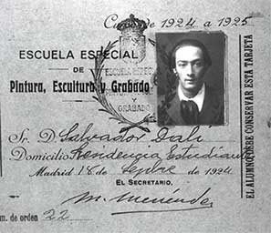
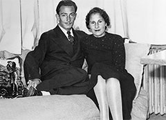

-
1904
Salvador Felipe Jacinto Dalí i Domènech is born in Figueres, Spain on May 11.
-
1908
Dalí's sister Ana Maria was born.
-
1904
Dalí’s father enrolled him in public school, but young Salvador spent his early scholastic career daydreaming instead of studying. Later, he was sent to a French-speaking secondary school.
-
1914
Dalí painted one of his earliest known works, Landscape, which is now part of The Dalí Museum’s permanent collection.
-
1916
Dalí attended drawing school in Figueres and studied with Ramon Pichot, a local painter who introduced him to impressionism and became his mentor.
-
1921
Dalí's mother died of breast cancer, devastating 16-year-old Salvador. The next year, Dalí’s father married his deceased wife’s sister.
-

1922
Dalí was admitted to Madrid’s San Fernando Academy of Art.
-
1926
Dalí visited Paris for the first time and met Pablo Picasso.
-
1929
Dalí met his future wife Gala (then-wife of Surrealist poet Paul Eluard), who he married five years later.
-
1929
Dalí officially joined the Surrealist movement and created the shocking avant-garde film Un Chien Andalou (An Andalusian Dog) with Luis Bunuel.
-
1931
Dalí painted melting watches in The Persistence of Memory to represent how all things, even time, are destructible.
-
1934
Dalí married Elena Ivanovna Diakonova aka Gala, who was 10 years his senior, in a civil ceremony.
-
1936
Dalí gives a lecture in a diving suit at the International Surrealist Exhibition in London and appears on cover of Time Magazine.
-
1939
Dalí visits Sigmund Freud in London.
-
1939
Dalí designed the surreal Dream of Venus pavilion for the World’s Fair in New York.
-
1940
Dalí created his first painting in exile in the United States: Daddy Longlegs of the Evening–Hope!. This is the first Dalí work purchased by The Dalí Museum founders Eleanor and Reynolds Morse, and is part of the Museum’s permanent collection.
-
1943
Dalí meets Eleanor and Reynolds Morse, who would become lifelong friends and major collectors, who later founded The Dalí Museum.
-

1948
Dalí and Gala return to Spain for the first time after 8 years in the US, Dalí returns to NY each winter
-
1949
Dalí painted his first large-sized religious canvas, Madonna of Port Lligat.
-
1950
Dalí's father died.
-
1952
Dalí goes on a lecture tour in America on “nuclear mysticism”—his new theory of art which combines religion, math, science and Catalan culture in an attempt to revive classical values and techniques.
-
1958
Dali and Gala marry in a religious ceremony in Girona, Spain on August 8.
-
1966
The Morses lent 70 oils and 35 other works to “Salvador Dalí: 1910–1965,” a historical, 250-piece retrospective in New York City’s Gallery of Modern Art.
-
1969
Dalí begins painting The Hallucinogenic Toreador, a fantastical masterpiece of double imagery and visual illusion. This impressively large piece is now part of The Dalí Museum’s permanent collection.
-
1974
Dali’s museum, the Teatre-Museu Dali, in Figueres, Spain, opens on September 28.
-
1975
Dalí painted his final masterwork, a mind-shattering visual illusion entitled Gala Contemplating the Mediterranean Sea which at Twenty Meters Becomes the Portrait of Abraham Lincoln (Homage to Rothko).
-
1982
The Morses moved their collection and inaugurated The Dalí Museum in St. Petersburg, Florida.
-
1982
Dalí painted his final painting, The Swallow’s Tail, which is based on Rene Thom’s mathematical catastrophe theory.
-
1982
Gala died at Pubol, the castle that Dalí had bought and remodeled especially for her, on June 10.
-
1982
King Juan Carlos I appointed Dalí “Marquis of Pubol” in recognition of his contributions to the nation of Spain. Dali succeeds in changing it to the Marquis of Dali and Pubol.
-
1989
Dali dies of heart failure on January 23 in Figueres. He is buried under the geodesic dome in the Teatre-Museu Dali.
Salvador Dalí